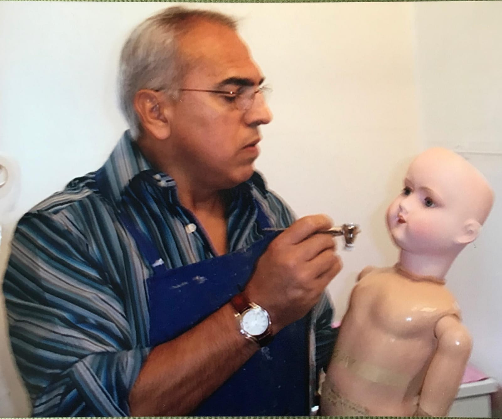
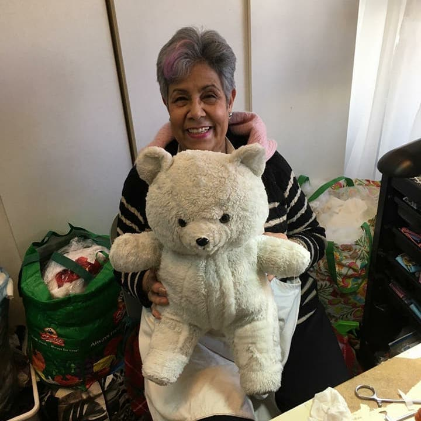
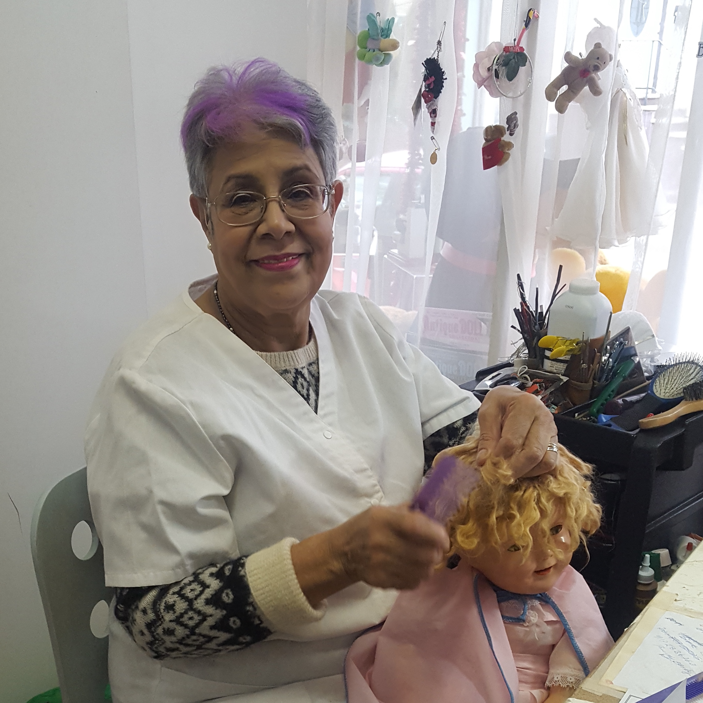
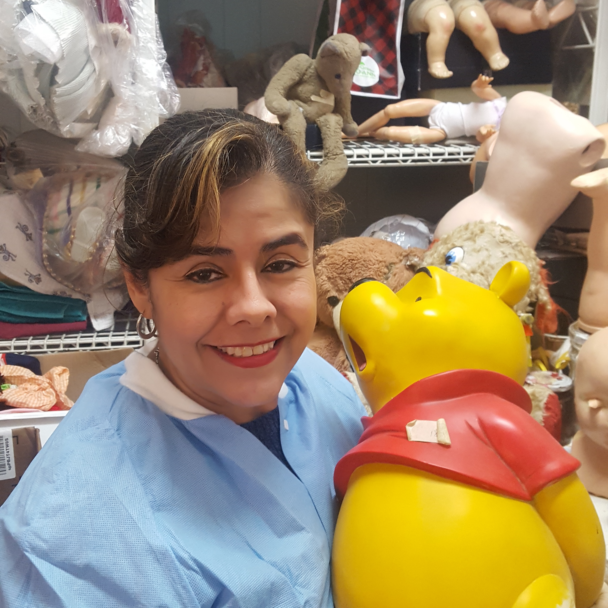
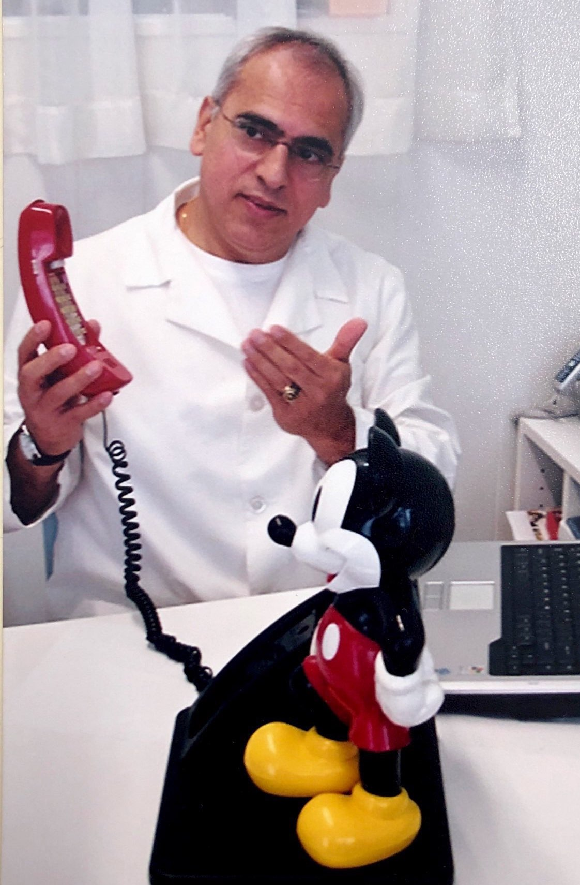

Get Your Diagnosis
Send us your doll or teddy bear for an immediate diagnostic.
Secaucus Doll and Teddy Bear Hospital
161 Front St. Secaucus, NJ, 07094
Phone: +1 (201)-223-2332
Please include a $20 check for insurance and shipping.
Secaucus Doll and Teddy Bear Hospital
161 Front St. Secaucus, NJ, 07094
Phone: +1 (201)-223-2332
Please include a $20 check for insurance and shipping.
Dreams
Bring or send your patient as soon as possible to the Secaucus Doll and Teddy Bear Hospital! We try to keep the original appearance of our visitors as best as possible. And remember: nobody dies in our hands. “The healing power of playing”
Secaucus Doll and Teddy Bear Hospital
Welcome!
The director and staff of the Secaucus Doll and Teddy Hospital with over 20 years of experience working for the
New York Doll Hospital.
Thank you for your visit!
A Message From Our Hospital...
Due to the outbreak of Covid-19, the Secaucus Doll and Teddy Bear Hospital has temporarily closed its doors.
But don't you worry, our patients are still recieving the upmost care
If you would like contact us with any concerns about your doll or teddy, please reach out to SecaucusDollHospital@gmail.com
Hope everyone stays stay safe and healthy, and we look forward to hearing from you!
But don't you worry, our patients are still recieving the upmost care
If you would like contact us with any concerns about your doll or teddy, please reach out to SecaucusDollHospital@gmail.com
Hope everyone stays stay safe and healthy, and we look forward to hearing from you!
In Memoriam
(July 30th 1951 - February 10th 2019)
After 5 long years of battle with Alzheimer’s, has finally succumbed to the illness. His years of dedication, compassion, and fervor towards his craft have, however, not gone unnoticed and have touched the hearts of all the members of our team. We are forever thankful to have had him in our lives and to be blessed with the knowledge he left behind. For as long as people want to recuperate and maintain the manifestation of their memories and emotions, we the Secaucus Doll and Teddy Bear team will continue to provide help to the world with all the passion and empathy Dr. Casas left us with before his departure.
May he forever rest in peace and oversee the future of his legacy.
- The Green Team

Today, the little store called Secaucus Doll and Teddy Bear Hospital, you can find broken porcelain dolls and torn teddy bears all waiting to be taken care of. The atmosphere is enveloped in an abundance of emotions and passion and greeted by an equal sentiment on behalf of our team. Whom of which have just received a devasting hit after losing doll repair pioneer Luis H. Casas.
After 5 long years of battle with Alzheimer’s, has finally succumbed to the illness. His years of dedication, compassion, and fervor towards his craft have, however, not gone unnoticed and have touched the hearts of all the members of our team. We are forever thankful to have had him in our lives and to be blessed with the knowledge he left behind. For as long as people want to recuperate and maintain the manifestation of their memories and emotions, we the Secaucus Doll and Teddy Bear team will continue to provide help to the world with all the passion and empathy Dr. Casas left us with before his departure.
May he forever rest in peace and oversee the future of his legacy.
- The Green Team
About Us

As far as I can remember, I have always been surrounded by dolls. My Childhood and adult life have passed by with memories of many, many dolls and teddy bears.
My mother worked at home as a doll dressmaker for a big doll factory in Bogota Colombia . I recall watching her while she was making patterns, sewing dresses and talking to her momentary friends .... "DOLLS".....at the same time.
During school vacations I worked at the production plant for the same doll factory my mother used to work. I wanted to be a real doctor; I had passion for medicine, but at that time it was very expensive to attend and study it at a university, and there was no financial aid available.
After I graduated from high school, I studied business administration and worked full time at the doll factory.
Combining my taste for medicine and the experience in administration, production and marketing of dolls, I followed my brother's idea about starting a “CLINICA DE MUNECOS” Doll hospital. And that is exactly what we did. And now it is rewarding to say that from the early seventies we have kept most of our family members busy working at the “Clinica de Muñecos Casas Reyes” in Bogota , Colombia .
During my first visit to N.Y. in 1986 I had a big surprise: I found out about “THE N.Y. DOLL HOSPITAL” in Manhattan , a place very familiar to my own, thousands of miles away from home.
I decided to meet with Irving Chais, the owner, and we kept in touch for a while until we started working together the following year.
These last 20 years of more experience at THE NEW YORK DOLL HOSPITAL; gave me new ideas, knowledge, techniques, materials and some '' tricky treatments for .........tricky sickness". All together have full-filled my personal and professional life.
SECAUCUS DOLL AND TEDDY BEAR HOSPITAL
Dr. LUIS H. CASAS
Director.
 My sister in-law.
She's incredible! a cloth designer who worked for a top fashion company earlier, now loves and enjoys making outfits and clothing complements for patients who are still recuperating from surgery as well as for those getting ready to go home. Her extraordinary skills allow you to choose from a variety of styles to make all kinds of clothing.
My sister in-law.
She's incredible! a cloth designer who worked for a top fashion company earlier, now loves and enjoys making outfits and clothing complements for patients who are still recuperating from surgery as well as for those getting ready to go home. Her extraordinary skills allow you to choose from a variety of styles to make all kinds of clothing.
 Of Mexican Nationality; Sara loves her work and specializes in repairing all kinds of stuffed animals using her exceptional sewing skills. Shes is very much dedicated to ensuring her patients are treated with the upmost care. Her skill set and experience makes sure that our patients can go home and live a long and prosperous life with their family.
Of Mexican Nationality; Sara loves her work and specializes in repairing all kinds of stuffed animals using her exceptional sewing skills. Shes is very much dedicated to ensuring her patients are treated with the upmost care. Her skill set and experience makes sure that our patients can go home and live a long and prosperous life with their family.
My mother worked at home as a doll dressmaker for a big doll factory in Bogota Colombia . I recall watching her while she was making patterns, sewing dresses and talking to her momentary friends .... "DOLLS".....at the same time.
During school vacations I worked at the production plant for the same doll factory my mother used to work. I wanted to be a real doctor; I had passion for medicine, but at that time it was very expensive to attend and study it at a university, and there was no financial aid available.
After I graduated from high school, I studied business administration and worked full time at the doll factory.
Combining my taste for medicine and the experience in administration, production and marketing of dolls, I followed my brother's idea about starting a “CLINICA DE MUNECOS” Doll hospital. And that is exactly what we did. And now it is rewarding to say that from the early seventies we have kept most of our family members busy working at the “Clinica de Muñecos Casas Reyes” in Bogota , Colombia .
During my first visit to N.Y. in 1986 I had a big surprise: I found out about “THE N.Y. DOLL HOSPITAL” in Manhattan , a place very familiar to my own, thousands of miles away from home.
I decided to meet with Irving Chais, the owner, and we kept in touch for a while until we started working together the following year.
These last 20 years of more experience at THE NEW YORK DOLL HOSPITAL; gave me new ideas, knowledge, techniques, materials and some '' tricky treatments for .........tricky sickness". All together have full-filled my personal and professional life.
SECAUCUS DOLL AND TEDDY BEAR HOSPITAL
Dr. LUIS H. CASAS
Director.
Meet the Team

There is no one else who loves and knows this fantastic profession (Doll Doctor) better than my wife: Ines.
Throughout the years of companionship, work, good times and rainy days she has been my support. Next to me she has learned the whole operation; she is the best when taking care of rotten skins, doll and animal stuffing, and wigs. Her skills as a professional hairdresser have given her a very well-known reputation; in fact many parents and guardians call her the “Miracle hair Lady” they say, and I agree: “she is the only one who can add that final touch that makes the difference”.
Throughout the years of companionship, work, good times and rainy days she has been my support. Next to me she has learned the whole operation; she is the best when taking care of rotten skins, doll and animal stuffing, and wigs. Her skills as a professional hairdresser have given her a very well-known reputation; in fact many parents and guardians call her the “Miracle hair Lady” they say, and I agree: “she is the only one who can add that final touch that makes the difference”.

The oldest of our children; Jeannette, studied Pre-school education; and while attending college she found the doll hospital to be a very special place where she learned and gained experience in the wonderful world of dolls. This excellent colleague has become an expert decorating our patients' bodies and faces, and also has mastered our plastic surgery techniques.
My sister in-law.
She's incredible! a cloth designer who worked for a top fashion company earlier, now loves and enjoys making outfits and clothing complements for patients who are still recuperating from surgery as well as for those getting ready to go home. Her extraordinary skills allow you to choose from a variety of styles to make all kinds of clothing.
Of Mexican Nationality; Sara loves her work and specializes in repairing all kinds of stuffed animals using her exceptional sewing skills. Shes is very much dedicated to ensuring her patients are treated with the upmost care. Her skill set and experience makes sure that our patients can go home and live a long and prosperous life with their family.
Contact Us
Phone: +1 (201)-223-2332
Address: 161 Front St. Secaucus, NJ, 07094
Email: SecaucusDollHospital@gmail.com
Hours Of Operation: Tuesday - Saturday [10:30 am to 5:00 pm]
Address: 161 Front St. Secaucus, NJ, 07094
Email: SecaucusDollHospital@gmail.com
Hours Of Operation: Tuesday - Saturday [10:30 am to 5:00 pm]
We Specialize in Doll Clothes/Wigs, Stuffed Animal Repair, and Antique Doll Restoration

Hospital Tour
Please enjoy a tour of our Doll and Teddy Bear Hospital through the narrative lens of this photo gallery!


Before and After
In our Before and After Gallery, check out how after a bit of treatment our patients come out looking like new! In our process, we try to preserve as much of the original color and composition of our patients.

Our patient Pinocchio was 30-40 years old when he arrived at our Doll and Teddy Bear Hospital. His outer shell consisted of a blend of wood and sawdust, and carried a fine coat of paint that had cracked and become discolored. We gave Pinocchio a new coat of paint, doing our best to use colors that matched the original. With some additional internal repair work to fix cracked wood, Pinocchio left our doll hospital ready for a long life with his family.

This bear came into our doll hospital with many rips and tears that needed immediate attention. When we repair any stuffed animal, our priority is to keep as much of the original material as possible and patch holes using like materials so that the outer shell looks cohesive. After some patchwork and detailed sewing, this bear left looking like new!

This baby doll entered our doll hospital with damages on its clothing, paint discoloration, and some grime that had built up. After a bath, a repaint, some patchwork done on its clothes, and a complete remake of its shirt, this baby doll was ready for his family.


This bunny came into our doll hospital with a lot of outer damage, and lacked good structual integrity because of it. In approaching the repair, it was decided that a large portion of the lower body would be replaced so that the bunny would be more durable, and in the upper body we would patch as much as we could. After a few weeks of hand stitching and custom clothes creation, this bunny was once again ready for play!


This bear came into our doll hospital with many missing materials on its nose, eyes, hands, and feet that needed a custom sewing. In the repair process, we ensured that the bear would be able to stand once again by amply replacing the inner stuffing. And under the request of the owner, a custom shirt was made, and with that the bear's stay at the doll hospital was complete.


This dinosaur came into our doll hospital with obvious damage to its structual integrity as its upper body had many tears making it barely able to hold the dinosaur together. In our repair process, we made a new upper body out of a stronger fabric to ensure durability and filled holes in areas on its limbs to complete the restore.
In The News
Preserving Memory at The Secaucus Doll and Teddy Bear Hospital by Emily Siegel on Vimeo (2017)
Secaucus 'hospital' mends dolls, teddy bears by The Jersey Journal (2008)
Romantic man gives fiancée Christmas surprise by finding her long-lost childhood teddy bear by The Mirror UK (2014)
El hospital de muñecas y peluches sorprendió a dos niños by Telemundo (2016)